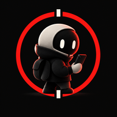

‹ Volver a Punto FalsoPolítica de privacidad
Última actualización: 6 de octubre de 2026
Punto Falso es un juego para pasar el rato con amigos. Guardamos lo mínimo, y esta página explica, sin letra pequeña, qué es y qué no.
Lo esencial
- Si creas una cuenta, guardamos tu correo, tu nombre de jugador y tu personaje, y unos contadores de partidas. Nada más.
- El audio del walkie-talkie no se graba ni se almacena. Se envía en directo al resto de la partida y desaparece.
- No hay publicidad, ni rastreadores, ni venta de datos.
- Puedes borrar tu cuenta y todo lo asociado desde la propia app.
Qué datos se guardan
En tu móvil (solo en él): el nombre que escribiste, tus ajustes de sonido y vibración y un identificador aleatorio para que, si recargas la página, vuelvas a tu sitio en la partida.
En nuestro proveedor de cuentas, Supabase (solo si tienes cuenta, con correo y contraseña, con Google o con Apple):
- Tu correo electrónico (si entras con Google o Apple, el que te facilitan ellos) y, si te registras con correo, tu contraseña protegida: nunca la vemos en claro.
- Tu nombre de jugador y el aspecto de tu personaje.
- Unos contadores de partidas jugadas, ganadas y como impostor.
- Solo si entras con Apple: el token que Apple nos entrega al iniciar sesión, que guardamos únicamente para poder revocarlo en Apple cuando borres tu cuenta. Nadie más puede leerlo y se borra con la cuenta.
Tu nombre de jugador, tu personaje y esos contadores pueden verlos otras personas con cuenta; tu correo no lo ve nadie más.
Durante una partida en línea, tu nombre, tu personaje, tus votos y los mensajes de texto viajan en directo entre los móviles de la sala a través de un servicio de mensajería en tiempo real (Supabase Realtime). No se almacenan: cuando termina la sala, desaparecen. Quién es el impostor se calcula en cada móvil y no viaja por la red. El modo «un solo móvil» no usa red durante la partida.
Chat entre amigos, bloquear y reportar
El chat de voz y de texto es entre amigos y no está moderado: nadie lo revisa ni lo guarda. Si alguien te molesta puedes:
- Bloquearlo (botón «Bloquear» en la lista de jugadores, o ⚑ junto a sus mensajes): dejas de oír su voz y de ver sus mensajes en esa sala. El bloqueo se guarda solo en tu móvil, no lo ve nadie más y puedes deshacerlo.
- Reportarlo: se abre un correo a soporte con el nombre del jugador, el código de la sala y la fecha. Ese correo lo envías tú y solo lo usamos para atender el reporte.
Micrófono y walkie-talkie
El micrófono solo se pide cuando pulsas el botón de hablar del walkie-talkie dentro de una sala, y solo está abierto mientras hablas. Tu voz se envía en directo a los demás jugadores de la sala. No se graba ni se guarda en ningún servidor; los clips que oyes solo existen en la memoria de tu móvil mientras tienes la partida abierta. Puedes jugar sin usar el micrófono (hay mensajes de texto) y retirar el permiso cuando quieras desde los ajustes de tu móvil o navegador.
Con quién se comparte
No vendemos ni cedemos tus datos. Para que el juego funcione intervienen estos servicios:
- Supabase: cuentas, perfiles y mensajería en tiempo real de las salas.
- Google y Apple, solo si eliges «Entrar con Google» o «Entrar con Apple»: te identifican y nos pasan tu correo.
- GitHub Pages: aloja la web y, como cualquier servidor web, puede registrar tu dirección IP al descargarla.
- Google Fonts: sirve la tipografía y también puede ver tu dirección IP al descargarla.
No usamos cookies de publicidad ni de seguimiento, ni herramientas de analítica.
Cómo borrar tu cuenta
- Entra en Punto Falso con tu cuenta.
- En la portada, toca Mi cuenta (o ☰ → Mi cuenta dentro de una partida).
- Toca Eliminar cuenta y confirma (con tu contraseña, o escribiendo BORRAR si entraste con Google o Apple).
Se borran de inmediato tu correo, tu nombre, tu personaje y tus contadores. Si entraste con Apple, también revocamos en Apple el acceso de la app a tu cuenta. No se puede deshacer. Es una cuenta compartida: es la misma que usa Punto Ciego, otro juego del mismo autor, así que al borrarla aquí también se borra allí, con tu personaje, tu nombre y tus estadísticas de los dos juegos. Si no puedes entrar en la app, escríbenos a javivalmich@gmail.com desde la dirección con la que te registraste y la borramos nosotros.
Menores
El juego es para mayores de 14 años. No pedimos edad ni datos personales para jugar. Si eres madre, padre o tutor y crees que un menor ha creado una cuenta, escríbenos y la eliminamos.
Tus derechos
Puedes pedirnos acceso, corrección o borrado de tus datos (el borrado también puedes hacerlo tú mismo, como se explica arriba). También puedes reclamar ante la Agencia Española de Protección de Datos (aepd.es).
Términos y condiciones
Las normas de uso del juego están en los términos y condiciones.
Cambios en esta política
Si cambia algo importante, lo actualizaremos aquí y cambiaremos la fecha de arriba.
Contacto
Responsable: Javier Valencia Michelena, desarrollador de Punto Falso, con domicilio en Calle Aranjuez, 25, 28039 Madrid. Escríbenos a javivalmich@gmail.com.